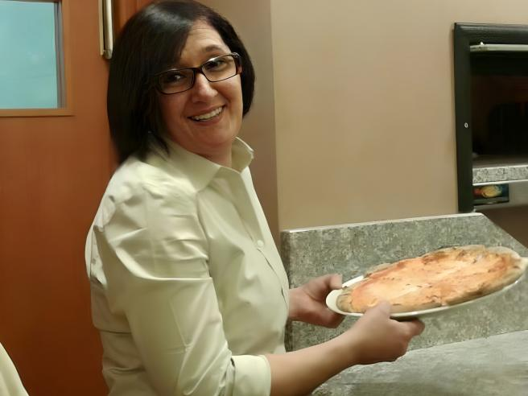

Giovanna Pedretti
Ristoratrice di Sant’Angelo Lodigiano, si è tolta la vita annegandosi nel Lambro dopo essere finita
al centro dell’attenzione mediatica per la recensione alla pizzeria di cui era titolare insieme al
marito.
Questa drammatica vicenda ci fa riflettere sul potere distruttivo dei social media ma soprattutto
sulla pericolosità della cattiva informazione e dell'eccessiva morbosità di un modo di fare
comunicazione nocivo, che purtroppo appartiene a tanti giornalisti.